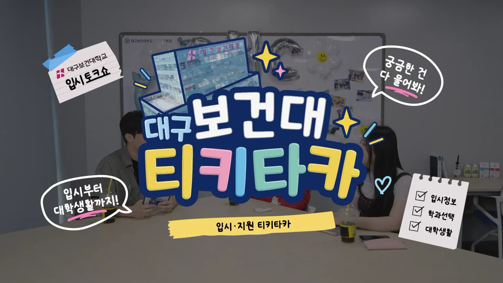
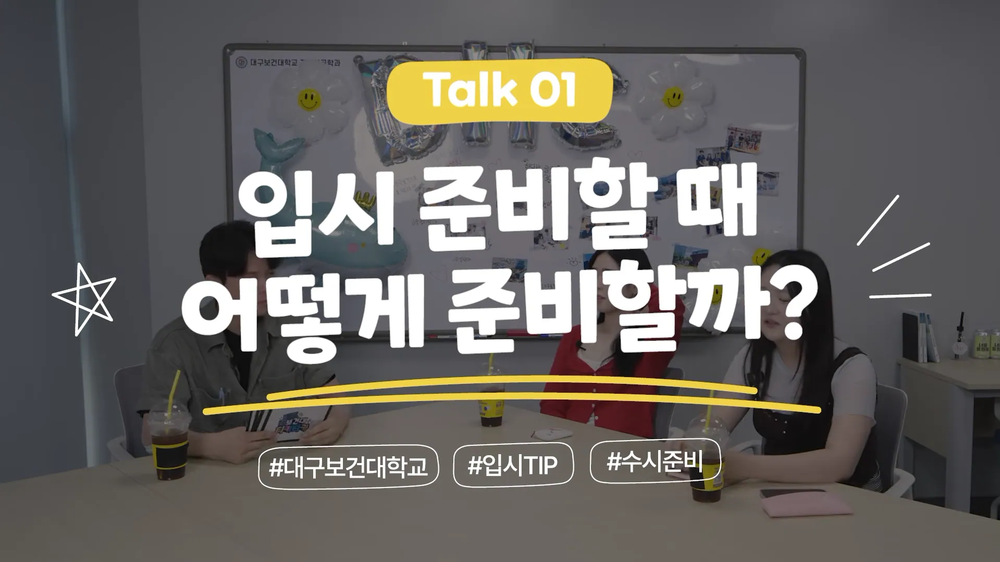
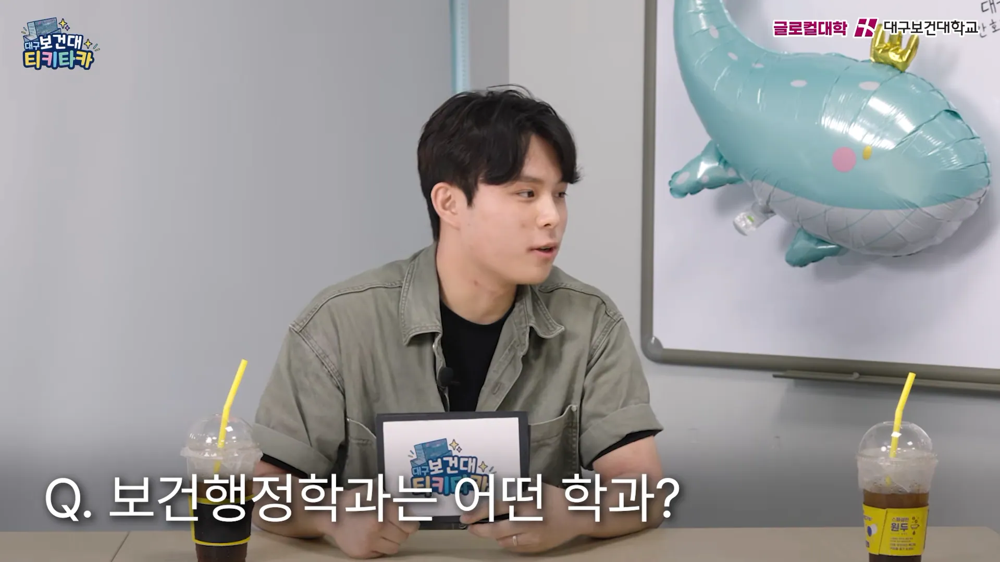
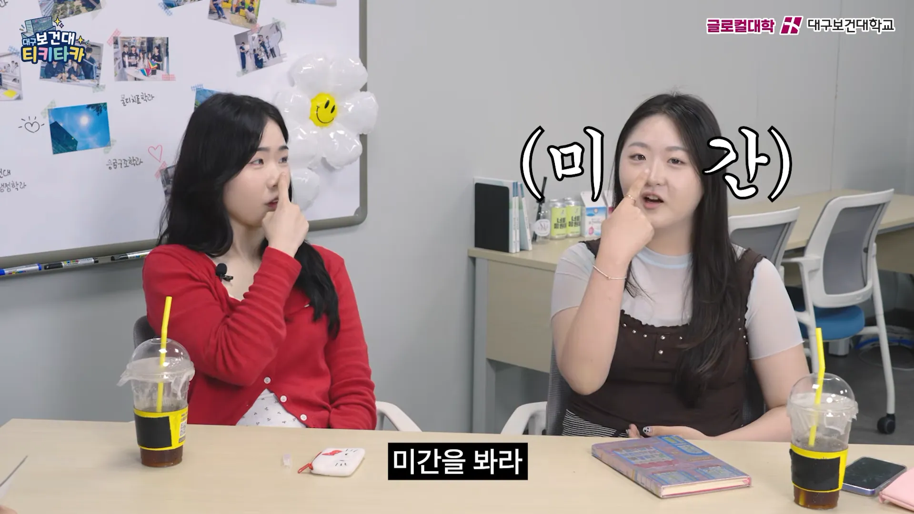
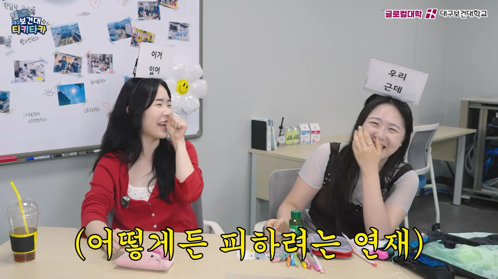
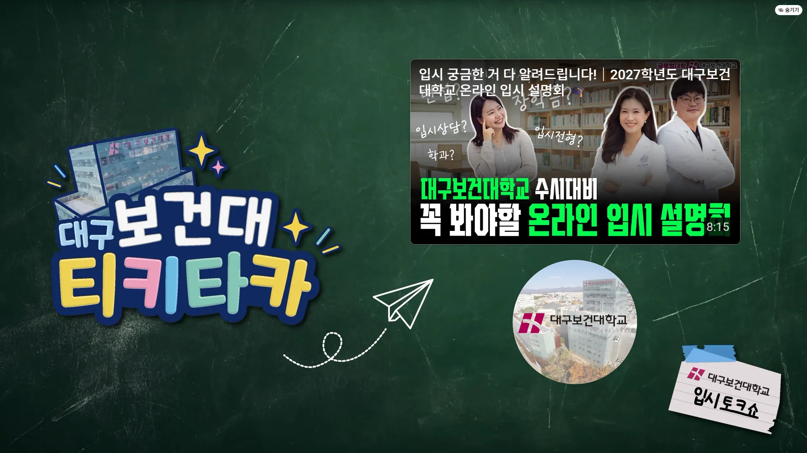

대구보건대학교 티키타카
대구보건대학교 티키타카
입시 준비부터 학과 선택, 면접까지 예비 입시생들이 궁금해할 이야기를 재학생들의 솔직한 경험과 게임형 콘텐츠로 풀어낸 웹예능입니다.
총 5편의 본편과 회차별 숏폼 콘텐츠를 편집했으며, 출연자 간의 자연스러운 대화 흐름과 예능적 재미를 살리는 데 집중했습니다. 상황에 맞는 자막과 효과음, 리듬감 있는 컷 편집을 통해 정보 전달과 콘텐츠의 재미를 함께 높였습니다.
-
This web variety show addresses topics that prospective college applicants are curious about—from college prep to choosing a major and interviews—through the candid experiences of current students and game-style content.
We edited a total of five main episodes along with short-form content for each episode, focusing on capturing the natural flow of conversation among the cast members and highlighting the show’s entertainment value. By incorporating context-appropriate subtitles, sound effects, and rhythmic editing, we enhanced both the delivery of information and the overall enjoyment of the content.
-
Project Scope
- 1. Web Entertainment Editing.
- 2. Motion Graphics & Sound Design.
- 3. Short-form Content Editing.






대구보건대학교 티키타카
-
기간 : 2026.07 – 2026.09
소속 : 픽셀아크
클라이언트 : 블룸
분야 : 웹예능 영상 제작
담당 : 본편 편집 · 자막 및 효과 · 숏폼 편집